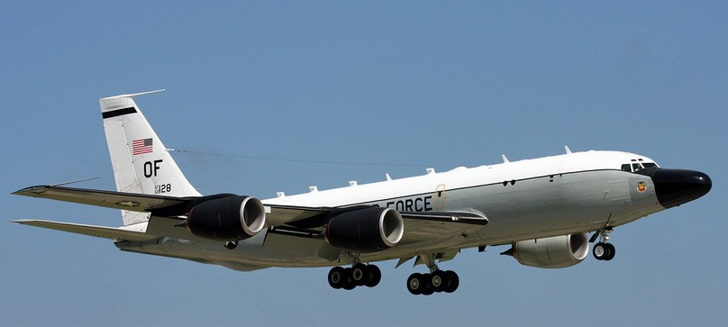
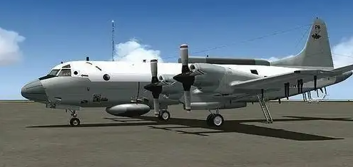
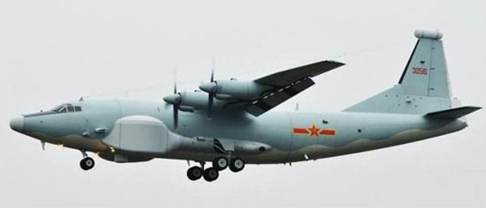
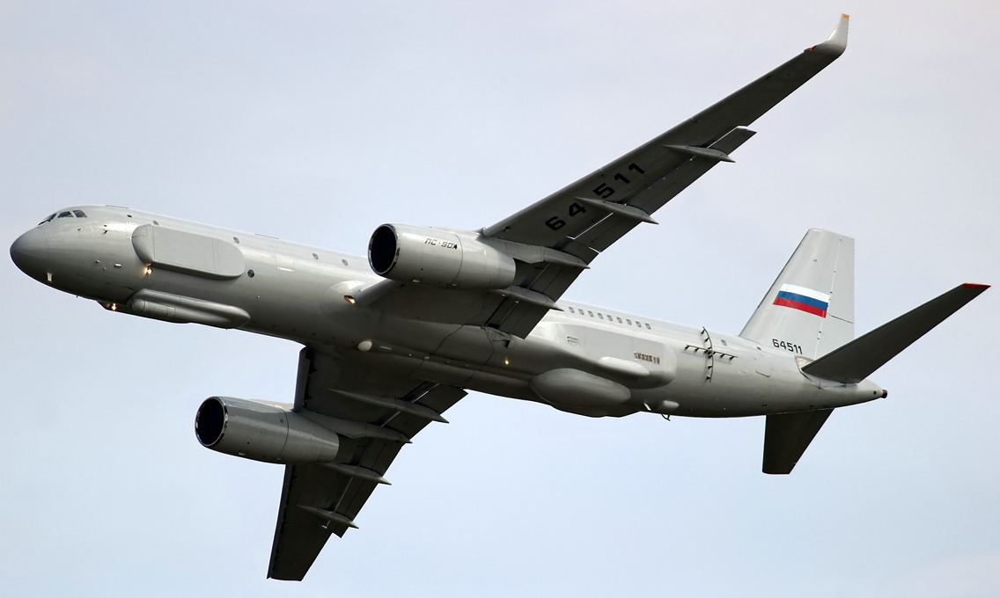

|
|
|
|
盘点一些世界著名的侦察机
RC-135侦察机

RC-135侦察机（英文：RC-135 Reconnaissance Aircraft），是20世纪60年代美国空军装备的一种战略侦察机。
RC-135侦察机擅长在目标国沿海地区实施侦察行动，被美国空军视为与新一代军事侦察卫星和远程无人驾驶飞机并驾齐驱的美军21世纪最重要的侦察工具，性能比EP-3还优越。美国RC-135侦察机分为多种型号，如A、S、U、V、W、X等型号，其中最新型号是X型。这些型号的侦察机可分别用于信号情报、电子情报和弹道导弹情报的侦察。TC-135SW型机主要用于训练
EP-3电子情报侦察机

美EP-3E电子侦察机是美国海军一种陆基信号情报侦察机，是美国P-3型反潜机的电子战改型，由美国洛克希德飞机公司制造。1969年首架EP-3加入美空中侦察第一中队服役，随后于1974年全面替换了EC-121“超级星座”电子战机。
运-8电子侦察机

运-8电子侦察机是特种飞机，是中国人民解放军高技术装备体系的重要组成部分。运-8电子侦察机等，可实施远距离干扰，掩护航空兵突防和支援陆海军作战。
图-214R

图-214R侦察机是俄罗斯图波列夫设计局研制的一型战略侦察机。
该机采用2台索洛维耶夫PS-90A涡扇发动机，单台推力156.9千牛。机冀内有6个整体油箱，尾翼内有1个油箱，燃油总容量达3万升。
|
|
| |